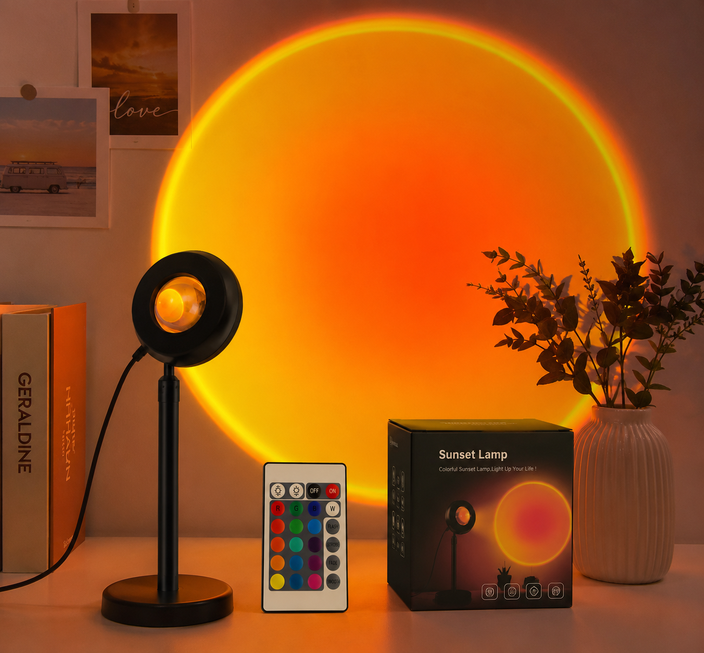

How to Position a Sunset Lamp for the Best Effect
Learn how far to place a sunset lamp from the wall, how to choose the angle and how to avoid glare, harsh shadows and unsafe cables.
There is no single perfect distance for every room. Wall size, lamp brightness and surrounding light all affect the final result. A simple test-and-adjust process gives better results than choosing a fixed measurement and leaving the lamp there.
1. Choose a clear wall or corner
Start with a light-colored surface that is easy to see from the main seating or camera position. A flat wall creates a cleaner circle. A corner creates more depth but may distort the shape.
2. Begin several feet from the wall
Place the lamp several feet away and turn it on. Move it farther back to enlarge the projection or closer to reduce the circle. Stop when the light fills the intended area without spilling into unwanted parts of the room.
3. Adjust the horizontal angle
A lamp aimed straight at the wall produces a rounder result. A lamp aimed across the wall creates a longer oval and stronger gradient. Test both before deciding which shape fits the room.
4. Adjust the height
A low position can project upward behind furniture. A desk-height position works well for photography and gaming setups. Keep the base stable and do not balance it on an uneven stack of objects.
5. Check glare from the normal viewing position
Sit on the bed, chair or desk where the lamp will normally be used. The light source itself should not shine directly into your eyes. Rotate or move the lamp until only the projected glow is prominent.
6. Control shadows
Furniture or people close to the wall may block the projection. Move the subject away from the wall, change the lamp angle or place the projection beside the subject instead of directly behind it.
7. Route the cable safely
Keep the USB cable against a wall, desk or furniture edge. Do not run it across a doorway or open walking path. Confirm the cable is long enough before choosing the final position.
Use multiple colors to test the same position
The featured Zavo lamp includes 16 colors and remote-control functionality, so different moods can be tested without rebuilding the setup.
View the featured sunset lampFast troubleshooting
- The circle is too small: move the lamp farther from the wall.
- The projection looks weak: reduce nearby room light or move the lamp closer.
- The shape is too stretched: aim more directly at the wall.
- There is a hard shadow: move the subject or furniture away from the wall.
- The lamp causes glare: lower it, rotate it or move it outside the direct viewing angle.
Once the shape, brightness and cable route are correct, mark the location mentally or with a small removable reference so the setup can be recreated quickly.